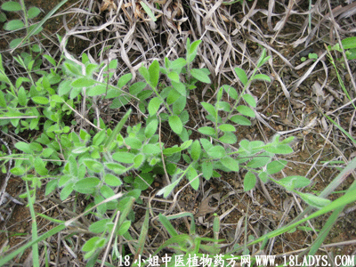

(本文解释权归中药材天地网兄弟站-18小姐中医植物药方网所有,如需转载请注明出处)
白毛将(中药材植物名:土丁桂)(植物科目:旋花科)

别名：白鸽草、分阳草。
植物名：土丁桂。
生长环境：本品为多年生草本。喜生于干燥坡上，空旷地或路边的草丛中。
分布：广布于全球的热带地，广东以南部、中部和海南较多，广州近郊旷野亦常见。
入药部分：全草。
采集期：夏、秋。
自采地点：山岗。
性味：性凉、味淡。
功用：清湿热。
主治、用量和用法：1、红白痢症：用5钱至1两，清水煎服；2、湿热毒痛：用法如前。
验方：（治痢症方）白毛将1两、五指柑3钱、武夷茶4钱、羊蹄草6钱、清水三碗，煎成一碗服。
（方解）白毛将、羊蹄草清大肠热，武夷茶消腻滞，五指柑疏风热，对肠胃有热，复感于风邪二症见下痢、腹痛、发热而恶风者，本方有表里兼治作用。
（方歌）急性痢疾苦难堪，白毛将与五指柑，武夷合羊蹄草，清热解毒病难侵。
(本文解释权归中药材天地网兄弟站-18小姐中医植物药方网所有,如需转载请注明出处)